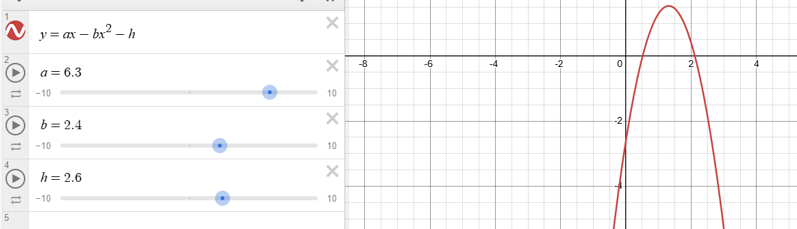

几何法解一阶ODE、欧拉数值法解一阶ODE、分离变量法解一阶ODE、解标准一阶线性ODE、换元法解伯努利方程+一阶齐次ODE、一阶自治ODE图像分析
mit 18.03 Arthur Mattuck教授讲的微分方程。
导言
常微分方程（ordinary differential equation, ODE）：函数的自变量只有一个，通常是时间
举个最简单的例子，考虑平抛问题中的垂直方向，向下为正。
\(\because \dot{v} = g \quad \therefore v = gt + v_0\)
\(\because \dot{y} = v = gt + v_0 \quad \therefore y = \frac12gt^2 + v_0t + y_0\)
上面这个简单的例子，其实就是在求解微分方程：\(\ddot{y} = g\)
这个微分方程非常简单，且求解非常容易。但往往实际中的大部分问题，你只能列出微分方程，但是却无法精确求解它。例如下面单摆这个例子：

规定以中间垂直线为标准，向右边的角度为正，左边为负。考虑切向加速度\(a\)，加速度前的负号表示它总指向与位移相反的方向。
可以根据图片写出一些公式： \[ \begin{align*} \because x &= L\theta \\ \because a &= -g\sin \theta \\ \therefore \ddot{x} &= -g\sin\theta \\ \therefore L\ddot{\theta} &= -g\sin\theta \\ \therefore \ddot{\theta} &= -\frac{g}{L}\sin\theta \end{align*} \] 我们成功写出了一个关于\(\theta(t)\)的微分方程。为了更加负号实际，我们引入空气阻力，于是微分方程变为： \[ \ddot{\theta} = -\mu\dot{\theta} - \frac{g}{L}\sin\theta \] 很好。单摆这个微分方程，是十分难求解的。既然我们求不出它的解析解，那我们如果仅通过这个方程窥探摆运动的规律呢？
既然上面那个微分方程体现了摆的运动，那我们先将这个微分方程可视化出来，具体来说，我们可以以x轴为\(\theta\)，y轴为\(\dot{\theta}\)。即有向量坐标\((\theta, \dot{\theta})\)。对向量坐标求导，得到\((\dot{\theta}, \ddot{\theta})\)向量，它表示了当前该坐标在图上变化的方向和大小。
这样子的话，我们对平面上所有坐标\((\theta, \dot{\theta})\)，把对应的\((\dot{\theta}, \ddot{\theta})\)向量平移到以\((\theta, \dot{\theta})\)为起点上来。就可以得到一副这样的图：

（为了保持美观，向量的长度保持了一样，通过颜色来区分向量的长度）
这幅图会引发我们很多的思考，可以发现，原点代表着摆的角度和角加速度都为0，即静止状态。通过旋流来看显然最后的状态都会回归静止状态，这是符合实际的。我们还会发现，在\((\pi, 0)\)位置的旋流是静止的，说明\((\pi, 0)\)是个不动点。那它代表什么物理含义呢？它代表小球在正上方保持平衡。well，根据实际我们可以知道，这确实是个可保持静止的地方，但但凡受到一点扰动，就会打破这个平衡。
所以我们可以得出结论：\((0, 0), (\pi, 0)\)都是不动点，但\((0, 0)\)是稳定点，而\((\pi, 0)\)不是。
非常有趣！问题来了，如何绘制出这一幅图？
我们已知的是微分方程为\(\ddot{\theta} = -\mu\dot{\theta} - \frac{g}{L}\sin\theta\)，且坐标\((\theta, \dot{\theta})\)上的向量为\((\dot{\theta}, \ddot{\theta})\)。
那么我们可以任意选取某点\((\theta_0, \dot{\theta}_0)\)，然后根据微分方程算出\(\ddot{\theta}\)。即可得到当前坐标上的向量\((\dot{\theta}_0, \ddot{\theta}_0)\)。这个向量就体现了该坐标的移动趋势，所以我们将该坐标朝着对应向量方向移动一个小距离\(\Delta t\)，即可得到新点\((\theta_1, \dot{\theta_1})\)。重复这个步骤，即可画出一条轨迹。多次取不同的初始点进行绘制，即可得到若干条轨迹。全部的轨迹合起来就是上述那张图。
Well，讲到这里，相信你已经感受到微分方程的魅力了。通过小小方程，即可窥探事物运行的规律，没有比这更令人兴奋的事情了！
一. ODE几何方法
如何用作图描述ODE呢？
使用方向场。跟前言中使用的方法类似，假设目前我们有：\(y' = f(x, y)\)
那我们可以作一幅二维图，x轴就是x，y轴就是y，坐标\((x, y)\)上是一个短线（称为"线素"），这条短线的斜率就是\(y'\)
那么，画出一条与所有线素相切的曲线，就是微分方程\(y'=f(x, y)\)的一个解，称之为"积分曲线"
这显然是正确的，因为对于一条画出来的曲线，其任意一点都与线素相切，说明其斜率也就是\(y'\)跟给定的\(y'=f(x,y)\)一致，也就是这条曲线符合微分方程，所以它自然就是解。
例如这个微分方程：\(y' = -\frac{x}{y}\)。它用方向场画出来的积分曲线如下：

（\(C = 0\) means \(y' = 0\)）
再来一个例子：\(y' = 1 + x - y\)

注意到在\(C=2\)和\(C=0\)两条之间的区域，当积分曲线进入这个区域后就再也出不去了，解函数无法逃逸。另一个需要注意的要点是，积分曲线永远不会相交。如果两曲线相交的话，则在交点处就会有两条切线、两个斜率，这与微分方程不符。因此进入此区域的曲线，无法逃逸也无法相交，只能够互相靠近，朝向\(y=x\)的直线靠拢。
事实上，在方向场上的积分曲线满足"存在与唯一性定理"：
- 存在性：若\(y\)在\((x_0, y_0)\)的领域内连续，则通过\((x_0, y_0)\)的\(y'=f(x, y)\)有解。
- 唯一性：若\(y'\)在\((x_0, y_0)\)的领域为连续，则通过\((x_0, y_0)\)的\(y' = f(x, y)\)有且仅有唯一解。
二. ODE欧拉数值法及推广
欧拉数值法解微分方程其实就是导言里用的方法。对于微分方程：\(y' = f(x, y)\)，如何在图上求出其中某条曲线(解)呢？首先你先得确定一个初始点\((x_0, y_0)\)，然后从初始点出发，一步一步画出曲线。
对于坐标\((x, y)\)，求导后可得到\((1, y')\)向量，这个向量就是从\((x, y)\)出发的移动趋势向量。朝着这个向量的方法走一个步长，一直迭代下去，就可以得到用欧拉数值法拟合出来的曲线。
那么移动后的坐标是多少呢？假设步长为\(\alpha\)，那么可以得到公式\(f(x_k, y_k)\)为函数在\(x_k\)处的导数： \[ \begin{cases} x_{k+1} = x_k + \alpha \\ y_{k+1} = y_k + \alpha \cdot f(x_k, y_k) \end{cases} \] 上面的方法就叫一阶欧拉数值法。（一阶的意思是你求了一次导数）
即如果你确定了初始点\((x_0, y_0)\)和微分方程\(y'=f(x, y)\)，那么通过此方法就可求出以\((x_0, y_0)\)为初始点且满足微分方程的曲线。
这个方法好不好呢？
当然是有的，显然我们知道，步长越小越精确。但再怎么精确，如果真正的函数是曲线的话，欧拉数值法也是得不到真正解的。
例如下面这个图，在\((x_k, y_k)\)处是凸的(因为\(y'' > 0\))，所以在此点迭代的下一个\(y_{k+1}\)是小于真正的\(y\)的。
同理，如果某点的\(y'' < 0\)，那么在\((x_k, y_k)\)便是凹的，因此在该点迭代的下一个\(y_{k+1}\)是大于真正的\(y\)的。
我们知道了数值法并不能求精确解，但是我们会希望误差最小。
所以步长与误差之间的关系是什么呢？答案是\(e \sim c\alpha\)，\(c\)是一个常数，即误差近似与步长为线性关系。
那么能不能使这个误差\(e\)小点呢？
有的，求多几次导数就好了，例如我现在在\((x_k, y_k)\)，然后通过该点的导数\(y'_1\)可迭代处\((\hat{x}_{k+1},\hat{y}_{k+1})\)，然后我可以得到\((\hat{x}_{k+1},\hat{y}_{k+1})\)的导数\(y'_2\)。
于是我将\(\frac{y'_1 + y'_2}{2}\)作为\(y'\)，然后在\((x_k, y_k)\)基础上迭代出\((x_{k+1}, y_{k+1})\)。
这样得到的\((x_{k+1}, y_{k+1})\)会更加接近真实解。
从几何上理解也很直观，相当于取了两次方向向量的中间作为新的方向向量，然后朝着新方向向量移动一小步，这样的偏差会比原先的一阶欧拉数值法小。
因为在这个方法中，我们算了两次导数，所以该方法叫做二阶欧拉数值法。其误差与步长的关系是：\(e \sim c\alpha^2\)
同理，我们还可以求三步、四步的信息(导数)，这样误差就会进一步缩小。但是由此带来的问题是计算复杂度变大。所以天下没有免费的午餐。通常在计算机绘制微分方程解时，都是采用的四阶欧拉数值法。
欧拉数值法有没有局限性呢？显然是有的，当解函数不是连续的，而存在“奇点”时，欧拉数值法在越过奇点之后将无法拟合出正确的曲线，例如下图这个真实解函数：

三. 一阶ODE解析法
前面两节我们分别通过几何法（画线素）和欧拉数值法求解了ODE。这一节我们将用解析的方式求解一阶线性ODE。
可分离变量的一阶ODE
我们把能写为：\(y' = f(x)g(y)\)形式的微分方程，称为一阶ODE。
那么，x放一边，y放一边，两边同时积分，即可求出答案： \[ \because \frac{dy}{dx} = f(x)g(y) \\ \therefore \frac{1}{g(y)}dy = f(x)dx \\ \therefore \int \frac{1}{g(y)}dy = \int f(x)dx \\ \] 例题：求\(y' = y\sin x\)的通解 \[ \text{when } y \ne 0, \text{one has } \frac{1}{y}dy = y\sin x \\ \therefore \int \frac{1}{y}dy = \int \sin x dx \\ \therefore \ln |y| = -\cos x + c \\ \therefore |y| = e^{-\cos x} \cdot e^c \\ \therefore y = \pm c \cdot e^{-\cos x} \\ \therefore y = c \cdot e^{-\cos x}, c \ne 0 \\ \text{when } y = 0, \text{it can pass the check.} \\ \therefore y = c \cdot e^{-\cos x}, c \ne 0 \]
一阶线性ODE
可以写成：\(a(x)y' + b(x)y = c(x)\)，的方程叫做一阶ODE。
为什么叫“线性”呢？因为\(y'\)和\(y\)呈线性关系，所以这样叫了。跟这种方程的感觉很像：\(ax + by = c\)
如果\(c(x)\)为0那么上面的方程可以称为“齐次方程”
但上面的形式是一阶线性ODE的通式，其标准形式如下： \[ y' + p(x)y = q(x) \]
一阶线性ODE在实际应用中很广泛，例如传导—扩散模型。
这个模型名字的来源是来自于两个物理现象，首先是温度传导现象：
外头是某种液体，中间可能是某种介质，外边套了层铁皮。那么如果\(T\)与\(T_e\)不同，则会发生温度传导现象，由牛顿温度传导定律，可得到如下方程：\(\frac{dT}{dt} = k(T_e - T), k > 0\)
以及浓度扩散现象：
外头是某种液体，中间也是某种液体，外边套了层半透膜。那么如果\(C\)与\(C_e\)不同，则会发生浓度扩散现象，同样可得到方程：\(\frac{dC}{dt} = k(C_e - C), k > 0\)
这就是传导—扩散模型，让我们用一个一般的数学式子来描述它： \[ \begin{cases} &T' + kT = kT_e \\ &k = p(t) \\ &kT_e = q(t) \end{cases} \] 显然，上面的式子显然是标准一阶线性ODE的写法，我们可以将其视为：\(y' + p(x)y = q(x)\)
知道了一阶线性ODE的定义，以及标准形式，以及实际生活中的建模运用。现在我们想知道的，就是如何求解它。 \[ y' + py = q \quad(1) \] \(p, q\)均为关于\(x\)的函数，我想找到一个关于\(x\)的函数\(u\)，使得(1)同时左乘\(u\)后，能使得左边的部分可以化简为\((uy)\)的导数，let's try： \[ uy' + upy = uq \quad (2) \] \(\because (uy)' = uy' + u'y\)
\(\therefore u' = up \quad (3)\)
也就是我们想到的这个\(u\)，满足(3)
(3)是可通过分离变量解的，因为\(\frac{du}{dx} = up(x)\)，整理得：\(\frac{1}{u}du = p(x)dx\)
可解出：\(u = e^{\int p(d)dx}\)
ok，将算出的这个\(u\)回代进(2)里，我们则可以得到： \[ (uy)' = uq \] 于是我们可以解出\(uy\)为多少，然后方程就没有求导项了，整理下即可求出\(y\)
思路总结：
- 求出\(u = e^{\int p(x)dx}\)
- 把\(u\)左乘\(y' + py = q\)，方程左边可变为\((uy)'\)
- 解\((uy)' = uq\)
例1. \(xy' - y = x^3\)
首先先化为标准形式：\(y' - \frac1x y = x^2\)
然后求出\(u = e^{\int p(d)dx} = e^{\int -\frac1x dx} = e^{-\ln x} = \frac1x\)
对标准形式左乘\(u\)：\((uy)' = (\frac1x \cdot y)' = \frac1x \cdot x^2 = x\)
\(\therefore \frac{y}{x} = \frac12 x^2 + c\)
\(\therefore y = \frac12 x^3 + cx\)
例2. \((1 + \cos x)y' - (\sin x)y = 2x\)
首先先化为标准形式：\(y' - \frac{\sin x}{1 + \cos x}y = \frac{2x}{1 + \cos x}\)
然后求出\(u = e^{-\int \frac{\sin x}{1 + \cos x}dx} = 1 + \cos x\)
对标准形式左乘\(u\)：\((uy)' = ((1 + \cos x)y)' = 2x\)
\(\therefore (1 + \cos x)y = x^2 + c\)
\(\therefore y = \frac{x^2 + c}{1 + \cos x}\)
例3. \(T' + kT = kT_e, k > 0\text{ is a constant. } T_e\text{ is a function of }x\)
已经是标准形式了
然后求出\(u = e^{\int k dt} = e^{kt}\)
对标准形式左乘\(u\)：\((uT)' = (e^{kt}T)' = kT_e e^{kt}\)
\(\therefore e^{kt}T = k\int T_e e^{kt} \mathrm{d}t + c\)
\(\therefore T = ke^{-kt}\int T_e e^{kt} \mathrm{d}t + ce^{-kt}\)
如果有实际物理意义，即\(t\)从0开始，并且给定\(T(0) = T_0\)。那么\(T\)的积分下限就是0，上限就是\(t\)。而且还可得到\(c = T_0\)。则：
\(T(t) = ke^{-kt}\int_0^t T_e(x) e^{kx} \mathrm{d}x + T_0e^{-kt}\)
可以发现，如果\(t \to \infty\)时，因为\(k > 0\)，所以\(T_0e^{-kt}\)会收敛到0。
因此\(T_0e^{-kt}\)叫做“暂态解”，\(ke^{-kt}\int_0^t T_e(x)e^{kx}dx\)叫做“稳态解”
而且我们发现，当\(t \to \infty\)时，\(T\)与初始状态\(T_0\)无关。
四. 一阶方程换元法
这类方程： \[ y'=p(x)y + q(x)y^{n}, n \ne 0 \] 叫做“伯努利方程”。解它用换元法，如下：
同除\(y^n\)，得：\(\frac{y'}{y^n} = \frac{p(x)}{y^{n-1}}+q(x)\)
令\(v = \frac{1}{y^{n-1}}\)，则有：\(v' = (1-n)y^{-n} \cdot y'\)
\(\therefore \frac{v'}{1-n} = p(x)v + q(x)\)
发现，线性方程出现了，那么可先解出v，然后回代解出y即可
例题. \(y' = \frac{y}{x} - y^2\)
同除\(y^2\)，得：\(\frac{y'}{y^2} = x^{-1}y^{-1} - 1\)
令\(v = y^{-1}\)，则：\(v' = (-1)y^{-2} \cdot y'\)
\(\therefore -v' = \frac{v}{x} - 1\)
\(\therefore v' + \frac{v}{x} = 1\)
\(\therefore u = e^{\int \frac1x dx} = x\)
左乘\(u\)，得：\((uv)' = (xv)' = x\)
\(\therefore xv = \frac12x^2 + c\)
\(\therefore v = \frac12x + \frac{c}{x}\)
\(\therefore \frac1y = \frac{x^2 + 2c}{2x}\)
\(\therefore y = \frac{2x}{x^2+2c}\)
第二类用换元法解的ODE，叫一阶齐次ODE，形如： \[ y' = f(\frac{y}{x}) \] 即等式右边的基本原子都是\(\frac{y}{x}\)
一阶齐次ODE的套路是先换元然后分离变量解决。
例题. 有一个贩毒船，还有一个灯塔，灯塔会对船射出光线，但是船不想被照到，于是船始终保持与光线成45°角一直逃窜，请求出船的运行轨迹。
根据图，可以列出方程： \[ y' = \tan (\frac{\pi}{4} + \alpha) = \frac{\tan \frac{\pi}{4} + \tan \alpha}{1 - \tan \frac{\pi}{4}\tan \alpha} = \frac{1 + \tan \alpha}{1 - \tan \alpha} = \frac{1 + y/x}{1 - y/x} \] 令\(v = \frac{y}{x}\)，则\(y = xv\)，\(y' = v + xv'\)
\(\therefore v + xv' = \frac{1 + v}{1 - v}\)
\(\therefore v + x\frac{dv}{dx} = \frac{1 + v}{1 - v}\)
\(\therefore x\frac{dv}{dx} = \frac{v^2 + 1}{1 - v}\)
\(\therefore \frac{x}{dx} = \frac{v^2 + 1}{(1 - v)dv}\)
\(\therefore \frac{1}{x}dx = \frac{1 - v}{v^2 + 1}dv\)
\(\therefore \int \frac1x dx = \int \frac{1 - v}{v^2 + 1} dv\)
\(\therefore \ln |x| = \arctan v - \frac12 \ln(v^2 + 1) + c\)
\(\therefore \ln |x| = \arctan \frac{y}{x} - \frac12\ln ((\frac{y}{x})^2 + 1) + c\)
\(\therefore \arctan \frac{y}{x} = \ln \sqrt{x^2 + y^2} + c\)
\(\therefore \theta = \ln r + c\)
\(\therefore r = ce^\theta, c > 0\)
上述方程又称为“指数螺旋线”，优美。
五. 一阶自治ODE
回顾一下，前面我们已经学会了用几何法一阶ODE（画线素），然后又学了数值法求一阶ODE；
然后，学了用分离变量法解一阶ODE，以及学会了用通法解决形如\(y' + p(x)y = q(x)\)的一阶ODE；
以及，学会了用换元法解决“伯努利ODE“和“一阶齐次ODE”。
现在我们再来学一种形如：\(y' = f(y)\)的一阶ODE解法，这种方程我们称为自治的，因为右侧仅仅由y组成不涉及x。
当然分离变量法可以解这个方程，但是我们不是想解它，只是想分析一下它的图像性质。
核心思路就是：画两张图，第一张图是“x-y图”，第二张图是“y-f(y)”图。
下面举一个Logistic equation with harvesting的例子（例如渔场养鱼捕鱼，\(y\)是鱼量，\(t\)是时间，\(h\)是捕获量）： \[ \frac{dy}{dt} = (a - by)y - h \] 首先令右边为：\(f(y) = ay - by^2 - h\)
然后画出\(f(y)-y\)图：

可以看出，与x轴有俩交点，分别令值为\(a, b\)
然后可以继续画出\(y-t\)图：
可以看出，a和b都是“临界点”。因为一旦\(y = a\)或\(b\)，那么\((x, y)\)将一直在\(y=a\)或\(b\)这条线上移动，用数值法的作图方法简单即可知道。
那么，我们会抛出疑问，虽然a和b都是临界点，但是谁是稳定的呢？
显然可以看出，b是稳定的，因为上下都趋向于它，a是不稳定的，因为上下都远离它。
对于实际意义来说，就是如果维持当前的捕获量\(h\)，那么只需要保证初始鱼量>a，即可保证一定时间后，鱼量收敛于b。
那么，如果我是农场主，我肯定希望捕获量\(h\)尽可能高，当\(h\)高时，上面那个二次函数会下移，如果移的太多了，那么整个函数在定义域都是下降的了，那么鱼量会一直下降到负无穷。所以我们要提高\(h\)，使得二次函数图像刚刚好与x轴有一个交点，值记为\(c\)的时候停止。此时的\(y-t\)图如下：
可以看出，只要你保证最开始的鱼量>c，那么最终你的鱼量会收敛于c，而且你的捕获量\(h\)此时是最高的。
OK，上面那个例子非常有趣right？
但是你可能会注意到一点，为什么图像都是平移相同的？
因为对于自治方程，等号右边等于\(y'\)，而且等号右边仅仅与\(y\)有关，如果我们确定了一个\(y_0\)，那么这条水平线上的线素都相同。所以说，你自己画画就知道，一阶自治ODE的图像是这种平移相同的了。